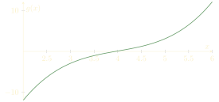

Calculus is the mathematics of approximations of continuous quantities; number theory asks exact problems about discrete quantities. These seem, therefore, to be unrelated studies.
Yet Kurt Hensel made a remarkable discovery: using ideas from calculus, one can better understand number theory problems. We're going to explain Hensel's wonderful discovery, by trying to solve polynomial equations in modular arithmetic. More particularly, we are going to try and find all integers \(x\) such that \[x^3 - 17x^2 + 12x + 16 \equiv 0 \pmod{3000}.\]
While this sort of problem -- solving a polynomial equation in modular arithmetic -- might seem a bit strange, it actually leads directly to the Langlands program in modern number theory, as we'll comment a little about at the end.
The prime factorization of 3000 is \[3000 = 2^3 \times 3 \times 5^3.\]
The Chinese remainder theorem tells us that solving \[x^3 -17x^2 + 12x + 16 \equiv 0 \pmod{3000}\] is, therefore, equivalent to solving the three different congruences \[x^3 - 17x^2 + 12x + 16 \equiv 0\pmod{2^3},\] \[x^3 - 17x^2 + 12x + 16 \equiv 0\pmod{3},\] \[x^3 - 17x^2 + 12x + 16 \equiv 0\pmod{125}.\]
It might seem like we've made our problem harder, not easier: we used to have one equation, but now we have three! However, there is a sense in which our life has been made simpler: to solve \[x^3 - 17x^2 + 12x + 16 \equiv 0 \pmod{8},\] for example, we only need to plug in \(x = 0, 1, 2, 3, 4, 5, 6,\) and \(7.\) This is only eight values to try. If we simplify our polynomial to \[x^3 -17x^2 + 12x + 16 \equiv x^3 - x^2 + 4x \pmod{8},\] and plug in each of the possible values, we quickly find that the only solutions to our equation modulo 8 are \[x \equiv 0, 4 \pmod{8}.\]
Similarly, we can plug in \(x= 0, 1, 2\) to find that the only solution to \[x^3 - 17x^2 + 12x + 16 \equiv 0\pmod{3}\] is \(x \equiv 1 \pmod{3}.\)
Just by plugging in a few values, we managed to solve 2 out of 3 of our equations. Unfortunately, plugging in every value from \(x = 0\) to \(x = 124\) to solve \[x^3 - 17x^2 + 12x + 16 \equiv 0\pmod{125},\] seems like it would take much too long. Are there any quicker ways to proceed?
Recall \(125 = 5^3.\) So, if \(x\) is an integer making \[x^3 - 17x^2 + 12x + 16 \equiv 0 \pmod{125},\] then we also have \[ x^3 - 17x^2 + 12x + 16 \equiv 0 \pmod{5}.\]
This equation is a little easier to solve: we can plug in \(x = 0, 1, 2, 3,\) and 4 to find that the only solution is \[x \equiv 2 \pmod{5}.\]
When we plug in \(x = 2\) to our polynomial, we get \[2^3 - 17 \cdot 2^2 + 12 \cdot 2 + 16 = -20.\]
This number is indeed divisible by 5... but it is not a multiple of \(125.\) However, Hensel thought that \(-20\) is close to being zero modulo 125, because \(125 = 5^3,\) and \(-20\) is at least divisible by 5 once, even if it isn't divisible by 5 three times.
On its own, this thought would probably not be so helpful. What made this idea so remarkable was what Hensel did next. Before we can explain that, though, we need to take a brief digression to recall an insight from calculus.
Newton showed us how to use calculus to take an approximate solution to an equation, and generate a slightly better approximation to a solution. It's not surprising that calculus can do this: calculus is the mathematics of approximation.
Let's recall his idea for classical functions. Suppose you have a function \(g(x),\) and you know that \[g(4) = 0.1.\] The graph of our \(g(x)\) looks like this.
\(0.1\) is pretty small, so we might guess that some solution to \(g(x) = 0\) lies pretty close to \(x = 4.\) Let's try looking for a solution to \(g(4 + \epsilon) = 0,\) where \(\epsilon\) is some small number. Newton told us that \[g(4 + \epsilon) \approx g(4) + g'(4) \cdot \epsilon.\] Here, \(g'(4) = 2,\) so we can approximate \[g(4 + \epsilon) \approx 0.1 + 2\epsilon,\] and so \(g(4+\epsilon) = 0\) has an approximate solution of \(\epsilon = -0.05.\) This number \(4 - 0.05 = 3.95\) is a slightly better approximation to the actual solution of \(g(x) = 0\) then \(x = 4\) was; if we wanted an even better solution, we could start at \(x = 3.95\) and repeat this same first derivative approximation trick. In this way, Newton was able to find very good approximations to solutions to all sorts of crazy equations.
Let's now return to Hensel. We saw that \(x \equiv 2 \pmod{5}\) is a solution to \[x^3 - 17x^2 + 12x + 16 \equiv 0\pmod{5}.\] Set \[f(x) = x^3 - 17x^2 + 12x + 16.\] Then \(f(2) = -20\) is divisible by 5, but it is not divisible by 125. However, Hensel thought that being divisible by 5 is `close' to being divisible by 125. So, he decided to do something which might seem a little strange: apply Newton's method to try and improve 2, to a number which is closer to being a solution to \(f(x) \equiv 0 \pmod{125}.\)
We know that any integer \(x\) obeying \(f(x) \equiv 0 \pmod{125}\) must obey \(x \equiv 2 \pmod{5}.\) So, we can write \[x = 2 + 5 \cdot n,\] for some \(n.\)
Hensel noticed a surprising identity: \[f(2 + 5 \cdot n) \equiv f(2) + f'(2) \cdot 5n \pmod{25}.\] Note how similar this is to the approximation used in calculus!
But why is this approximation true? To get some idea as to why, note that \[(x + 5n)^3 = \binom{3}{0}x^3 + \binom{3}{1} \cdot x^2 \cdot (5n) + \binom{3}{2} \cdot x \cdot (5n)^2 + \binom{3}{3} \cdot (5n)^3.\] Note, modulo 25, that most of the terms in this binomial expansion become 0, so that \[(x+5n)^3 = x^3 + 3x^2 \cdot (5n) \pmod{25}.\] As \(\frac{d}{dx} x^3 = 3x^2,\) this approximation looks a lot like the approximation \[f(2 + 5n) \equiv f(2) + f'(2) \cdot 5n \pmod{25},\] and indeed the same binomial theorem trick shows that this approximation will hold.
Now, using Newton's idea, let's try solving \[f(2) + f'(2) \cdot 5n \equiv 0 \pmod{25}.\] We know \(f(2) = -20,\) and we can compute \[f'(x) = 3x^2 - 34x + 12,\] so that \[f'(2) = 12 - 68 + 12 \equiv 6 \pmod{25}.\] Thus \[f(2 + 5n) \equiv f(2) + f'(2) \cdot 5n \equiv -20 + 30n \pmod{25},\] or \[f(2+5n) \equiv 5n + 5 \pmod{25}.\] Thus \[f(x) \equiv 0\pmod{25}\] can be solved by finding solutions to \(5n + 5 \equiv 0\pmod{25}.\) The solutions to this is \(5n \equiv 20 \pmod{25},\) so that \[x \equiv 2 + 5n \equiv 22 \pmod{25}\] is the solution to \(f(x) \equiv 0\pmod{25}.\)
We're now a little bit closer to solving our problem -- all we must do now is upgrade from a solution modulo 25 to a solution modulo 125. To do this, we use the seem approximation trick again: \[f(22 + 25n) \equiv f(22) + f'(22) \cdot 25n \pmod{125}.\] Observe that \[f(22) \equiv 75 \pmod{125},\] \[f'(22) \equiv 91 \pmod{125},\] so that we're solving \[75 + 91 \cdot 25n \equiv 0 \pmod{125}.\] One can rearrange this to \[25n \equiv 50 \pmod{125},\] so that \[x \equiv 22 + 25n \equiv 72 \pmod{125}\] is the final solution to our cubic equation modulo 125. And so, using tools from calculus, Hensel was able to solve a problem in number theory!
It turns out that the problem of solving polynomial equations in modular arithmetic leads to some very deep mathematics. Fix a polynomial \(f(x).\) By the Chinese remainder theorem, solving \[f(x) \equiv 0 \pmod{n}\] is equivalent to solving \(f(x) \equiv 0 \pmod{p^e},\) for each prime power \(p^e\) occuring in the prime factorization of \(n\) (the same way we solved a cubic equation modulo 3000 by breaking it up into equations modulo \(2^3,\) modulo \(3,\) and modulo \(5^3\)).
The procedure we described above is often called Hensel's lemma, and lets you reduce the problem of solving \(f(x) \equiv 0 \pmod{p^e}\) to the problem of solving \(f(x) \equiv 0 \pmod{p}.\) (There are a few exceptions to this rule, related to the conductor and discriminant of \(f.\))
Thus one is left with a natural question: for which primes \(p\) does \(f(x) \equiv 0 \pmod{p}\) have a solution? It turns out that answering this question depends a lot on the Galois group of \(f(x).\) When \(f(x)\) has an `abelian' Galois group, class field theory, a subject developed by Artin, Tate, and others, allows one to understand this problem. But when \(f(x)\) has a `non-abelian' Galois group, the situation is much more subtle. Robert Langlands was the first person to start understanding what was happening, and the famous Langlands program is devoted to fully understanding this question.
We encourage the interested reader to brave Langlands' wonderful essay Representation Theory: Its Rise and Its Role in Number Theory to learn more. In learning math, it is always good to read the masters.